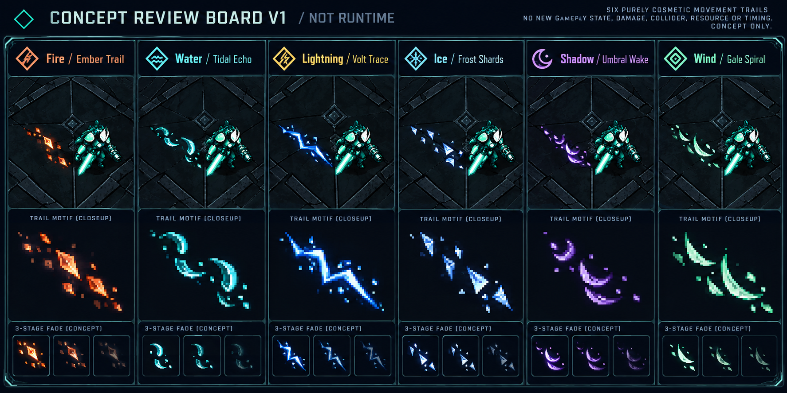

AWAITING USER VISUAL APPROVAL · COMPOSITE CONCEPT ONLY. Sáu lựa chọn loại trừ nhau, tối đa1trail. Checklist / giới hạn · Prompts. Ảnh nền renderer a4ea34b + PhaseA e2c1b92, fixture24enemy/2windup với cues Q9D; không naturalrun. Motif ImageGen được crop bằng CSS chỉ review, screenblend58%; không là sprite production hoặc runtime integration. Nền giữ pixel nguyên vẹn, không dùng contact sheet redraw làm bằng chứng geometry.
Concept board V1 — phóng lớn motif / fade study

Baseline và sáu alternatives — cuộn ngang, mỗi ảnh ở CSS native viewport